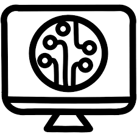
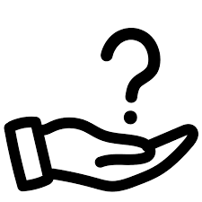

un poco sobre el softare de ayuda

Una mesa de ayuda para técnicos es un sistema o servicio que proporciona soporte técnico a usuarios o empleados dentro de una organización o clientes externos. El objetivo de una mesa de ayuda es resolver problemas tecnológicos, responder preguntas y facilitar el uso de los sistemas, aplicaciones o equipos.
El proceso de resolución de problemas generalmente sigue estos pasos: Diagnóstico inicial: Identificación y clasificación del problema. Resolución de primer nivel: El técnico intenta resolver el problema utilizando procedimientos estándar. Escalamiento si es necesario: Si el problema no puede resolverse, se transfiere a un equipo de segundo nivel. Documentación y retroalimentación: Una vez resuelto el problema, se documenta la solución y se proporciona retroalimentación al usuario.
Software de control remoto: Herramientas como TeamViewer, AnyDesk, o Remote Desktop para acceder a las computadoras del usuario. Sistema de gestión de tickets: Herramientas como Jira Service Desk, Zendesk, o Freshdesk para gestionar y hacer seguimiento de incidencias. Sistemas de monitoreo: Herramientas para verificar el estado de los sistemas y prevenir incidencias antes de que los usuarios las detecten.